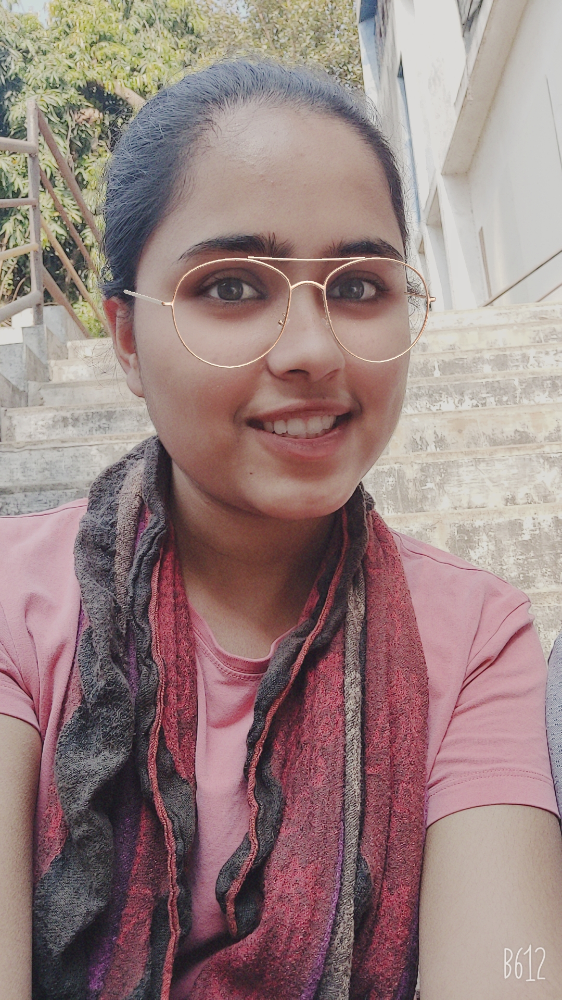
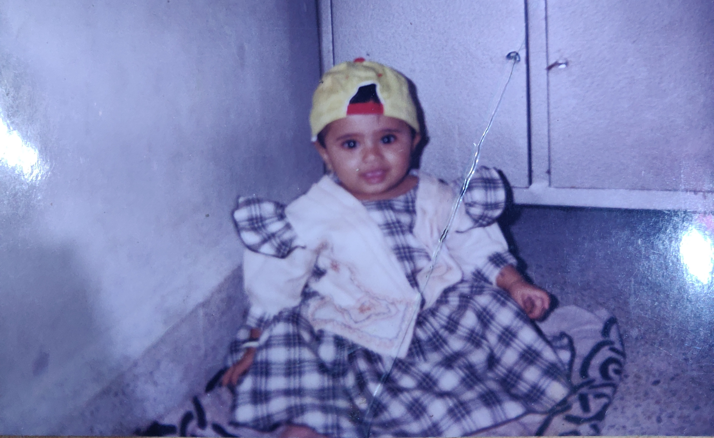

Anushree's Corner
This page is dedicated to dearest member of the group Anushree.
This is how Anushree Looks as of 2020

Basic Info about Anushree:
- Birthday: 19th February 1999
- Favourite Colour: Purple, Yellow
- Hobby: Sketching, Dancing, Singing
- Relationship status as of today: Single
- Favourite Food: Misal, Pav Bhaji, Paneer
- Dream place to visit: South Korea
- Starting work experience: Small scale manufacturing Company,Accenture
- Childhood dream: Professional dancer/singer, actor(🙈), a vet
- Favourite Author: Carolyn Kenee (Nancy Drew)
- Favourite Movie/ Series: One Day(Korean)😑
- Favourite Character: Tom and Jerry
- One word that describes you: Grateful
- Life mantra: Be Happy.
Childhood picture
|  |
I am cool, look at my hat bruh! |
A message from the whole group!
She is definitely the sweetest person on this planet.(we bet!) She has ambitions and she works her best and keeps reflecting on herself and constantly improves. She is amazing with animals and that tells a lot about her. She is innocent and beautiful. She is ready to help you out anyday anytime. She can be the symbol universal peace. We all love her.
Everyone agrees on this!🤐😋
Latest Updates:⌚